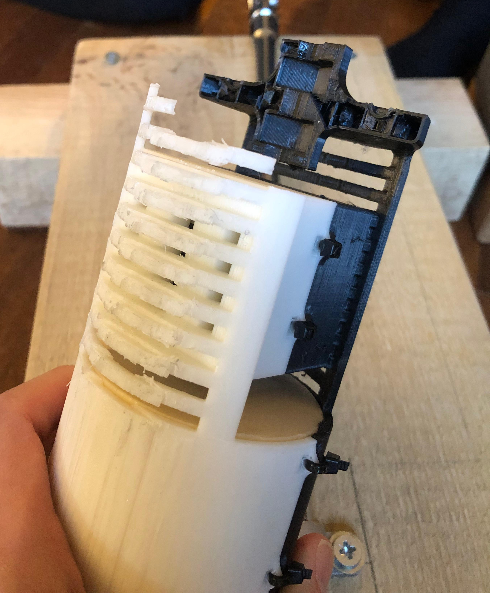
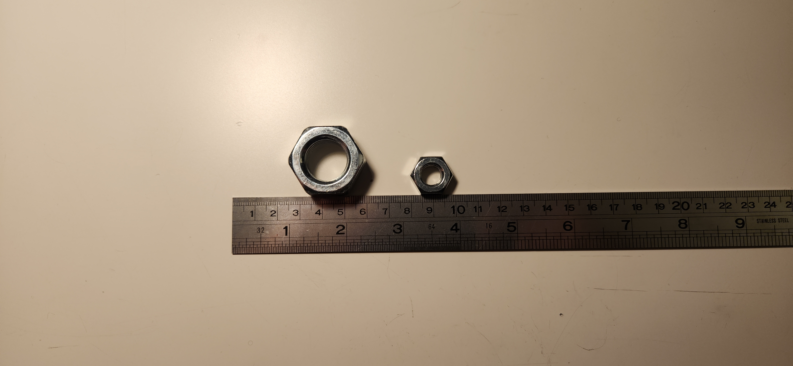

The testing phase of the project focuses on evaluating the functionality of the variable pitch propeller under controlled conditions. This includes spinning the propeller with a drill at 200rpm currently. After we reach success in the first step, we will mount the propeller on linear motion bearings and use a brushless DC motor instead of a drill. We will measure the output rpm with a hall sensor and a magnet, and we will measure the load the propeller creates with a load sensor.
During our first round of tests, the propeller broke due to structural issues. Material choice for the housing was wrong. We switched from PLA filament to PLA+ and strengthened our design. After switching to PLA+ filament and reinforcing the design, the results showed significant improvements in both strength and performance.

During our second round of tests, the shaft and the nuts connecting the propeller and the motor were unreliable. Even with strengthened material and proper nut housing, the housings deformed during the test and obstructed the propeller from revolving smoothly. In order to tackle this issue, we decided to optimize the weight distribution in the propeller and include a large 3D printed bearing on the propeller housing to smooth the turning of the propeller.

Our next steps involve refining the BLDC control system to ensure smooth operation of the propeller. Additionally, we will mount the propeller on linear motion bearings to decrease friction and acquire maximum thrust. We will measure the load the propeller creates with a load sensor and plot a graph in order to determine the most efficient angle of attack of the propeller blades at specific RPM values.